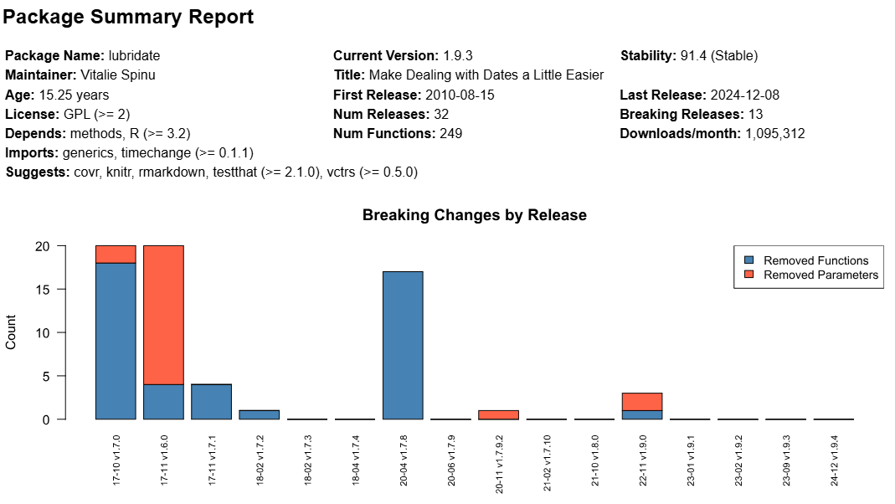

The pkg_summary function creates a package summary report.
The report aggregates some key information about the package
and a generates a chart showing breaking changes over time.
The function provides a nice snapshot that can help you get a feel for a package.
pkg_summary(pkg, releases = NULL, months = NULL, view = TRUE, path = NULL)A quoted string containing the name of the package to report on. This parameter is required.
An integer indicating the number of releases to collect
stability data for. For example, releases = 10 will return stability
data for the last 10 releases of the package. Default is NULL, which means
the function will return data for all releases.
An integer indicating the number of months back to collect
stability data for. For example, months = 24 will collect
stability data for the previous 2 years. Default is NULL, meaning there is
no limitation on the number of release months, and the function will collect
data from all releases.
Whether to display the report in the viewer. By default, the parameter is TRUE.
A path and file name for the report. If NULL, the function will create a temporary file. Default is NULL.
The path to the HTML report, invisibly. If the view parameter is TRUE,
the function will send the report to the viewer.
The pkg_summary function generates an HTML
report that can be sent to the RStudio viewer. It combines some information
from both the pkg_info and pkg_stability functions, and displays
it in a table and accompanying chart.
The table shows a selection of fields that can give you an overall sense of the package: its size, age, number of releases, dependencies, etc. The chart is a stacked bar chart showing the number of breaking changes for each release.
Here is an example of the package summary report:  The chart shows each release issued by the package maintainer over the last ~8.5 years. Releases prior to that are not displayed, as they are not included in the stability score. The bars represent the number of removed functions and removed parameters. The labels on each bar show the release year, month and version.
For additional information, see pkg_info and
pkg_stability.
# View summary report for "stringr" package
# - Set view = TRUE to see example
pkg_summary("stringr", view = FALSE)